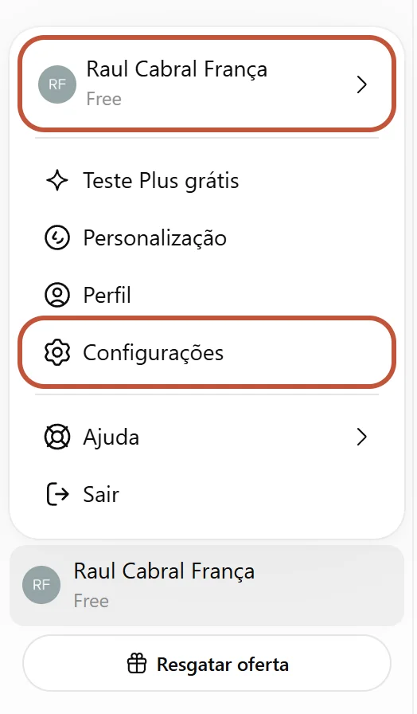
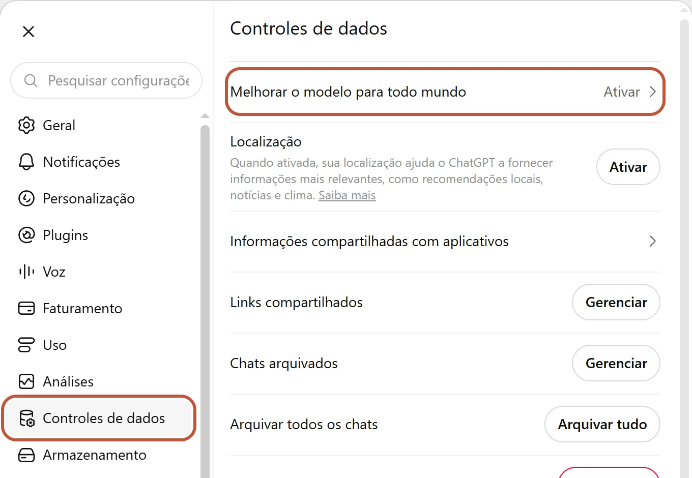
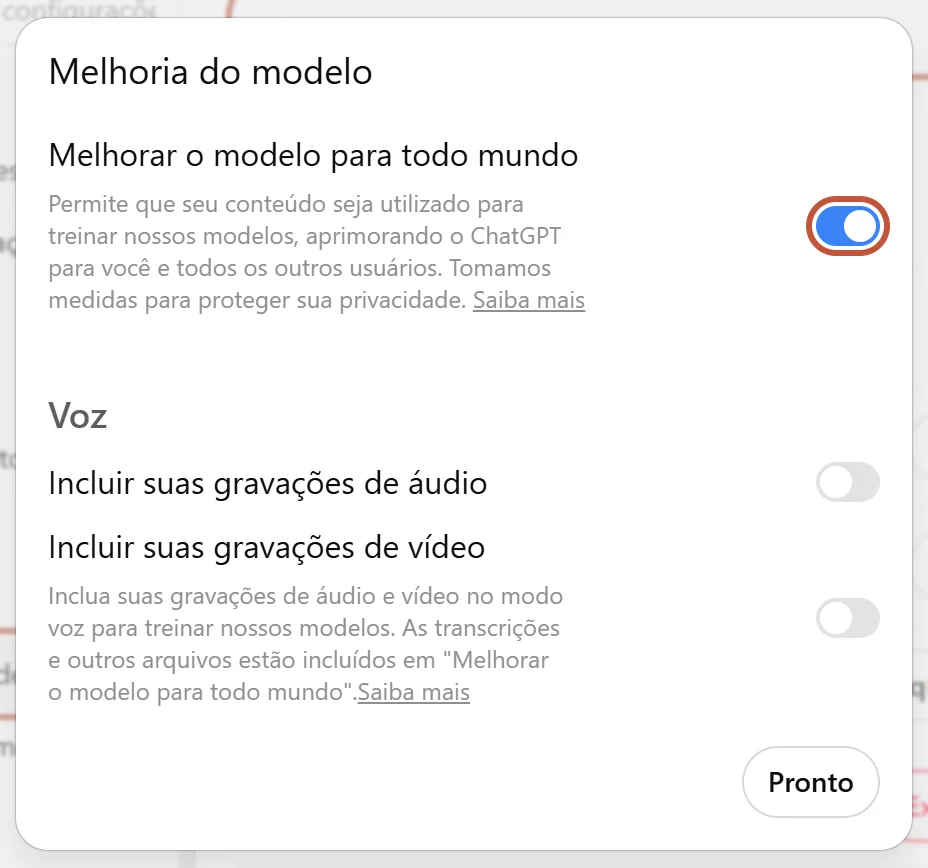

Desligue o treinamento no ChatGPT
O que significa "deixar suas conversas treinarem o modelo" e como desligar essa opção.
No Tópico 1, usamos o ChatGPT com uma situação genérica: sugestões para a Semana da Criança, sem o nome de nenhuma criança. A partir de agora, as tarefas vão se aproximar do trabalho real da escola. Antes disso, vamos desligar uma configuração do ChatGPT que decide o destino do que você escreve nele.
O que significa usar suas conversas para treinar o modelo
Treinar o modelo é o processo em que a empresa usa uma enorme quantidade de textos para produzir as próximas versões da ferramenta. Quando a opção de treinamento está ligada, o que você escreve no ChatGPT pode entrar nesse material.
Isso não quer dizer que o ChatGPT vai repetir amanhã, para outra pessoa, o que você escreveu hoje. O treinamento não funciona de forma tão direta. Mas pense que, na prática, o texto que você enviou ficará guardado e passará a servir aos propósitos da empresa. Nesse processo, ele pode ser examinado por sistemas automáticos e, em alguns casos, revisados por pessoas. Depois de enviado, o texto sai do seu controle.
Se era apenas um rascunho genérico, isso importa pouco. Se eram dados pessoais ou confidenciais, importa muito.
Como desligar no ChatGPT
A configuração vale para a conta inteira. Basta fazer uma vez, no computador ou no celular, e ela passa a valer nos dois. Faça agora, com o ChatGPT aberto em outra aba.
-
1

Clique no seu nome, no canto inferior esquerdo da tela. No menu que abrir, clique em Configurações.
-
2

Na lista à esquerda, clique em Controles de dados. Depois, clique na primeira linha: Melhorar o modelo para todo mundo.
-
3

Clique na chave ao lado de Melhorar o modelo para todo mundo para desligá-la. Ligada, ela fica azul, como na imagem. Desligada, fica cinza, como as duas chaves de voz logo abaixo, que também devem ficar desligadas. Clique em Pronto.
Para conferir, refaça o caminho e abra de novo a mesma opção: a chave deve continuar cinza.
No aplicativo do celular, o caminho é parecido: abra o menu lateral, toque no seu nome, depois em Controles de dados, e desligue a mesma opção. Os nomes e a posição dos botões mudam de vez em quando. Se não encontrar, procure a função: a opção que permite ou não que suas conversas sejam usadas para melhorar os modelos.
O que muda: as novas conversas deixam de ser usadas para treinar os modelos.
O que não muda: tudo o que você escreve continua sendo enviado aos computadores da OpenAI, porque é lá que a resposta é produzida. As conversas continuam no seu histórico e sujeitas às verificações de segurança da empresa. E, se você avaliar uma resposta com o polegar para cima ou para baixo, aquela conversa pode ser usada no treinamento mesmo com a opção desligada.
Desligar o treinamento é uma boa proteção. Mas não transforma sua conta pessoal num lugar adequado para dados de alunos, o que é o assunto da próxima leitura.
Dado de aluno fica na conta da escola
- O que o Google garante para o Gemini usado com a conta institucional.
- O básico da LGPD para quem trabalha com dados de crianças.
- O que pode e o que não pode ser feito no ChatGPT pelo celular.